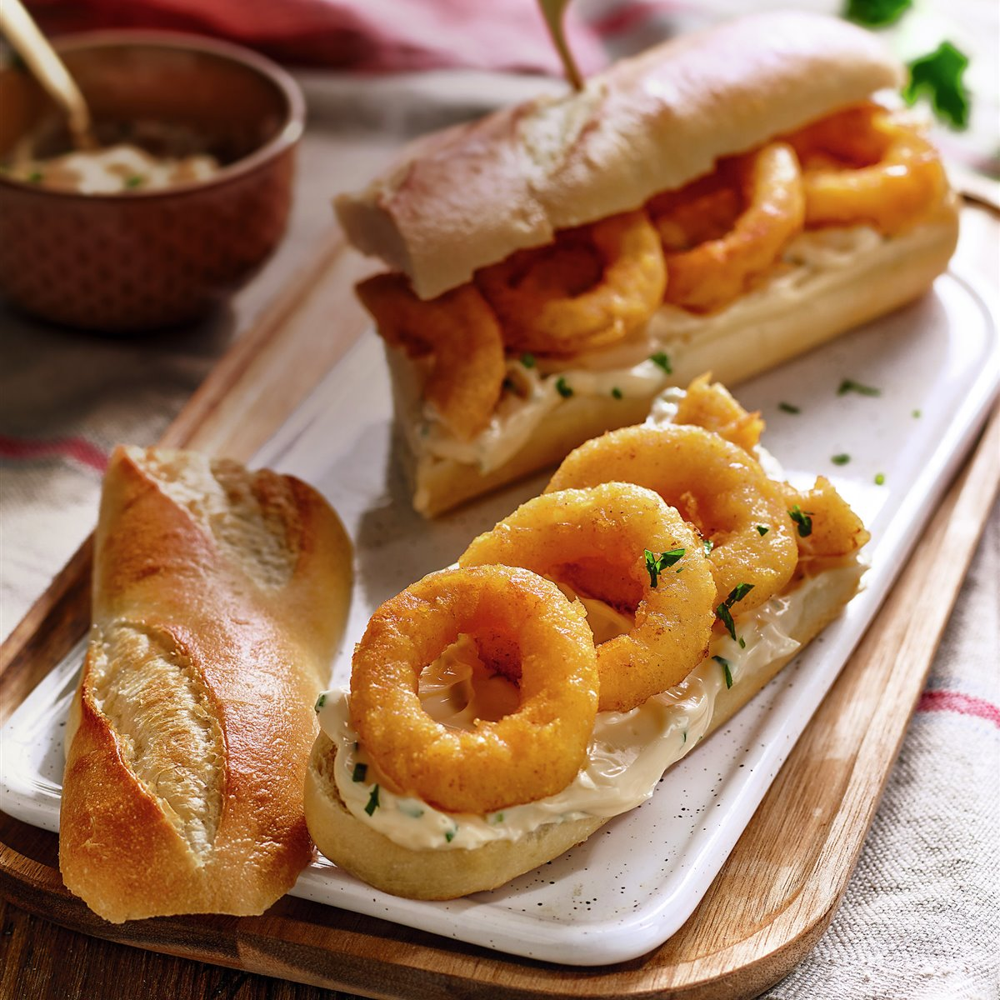

Bocadillo de calamares is one of the best-known bocadillo sandwiches in Spain, and a most beloved bar snack staple in the country’s capital, Madrid. It typically consists of a crusty Spanish-style baguette called barra de pan, which has been sliced in half lengthwise and stuffed with fresh and crunchy fried calamari rings.
Meal prep time : 15 minutes
Servings : 2